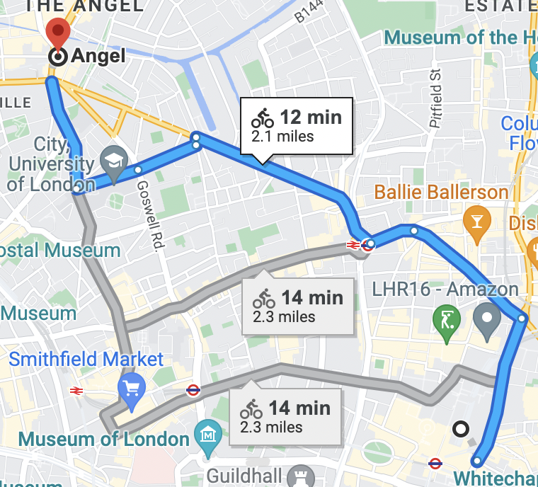
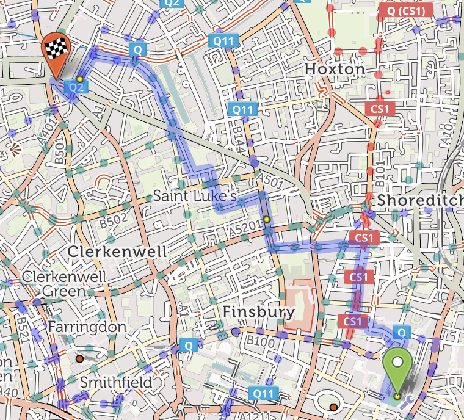
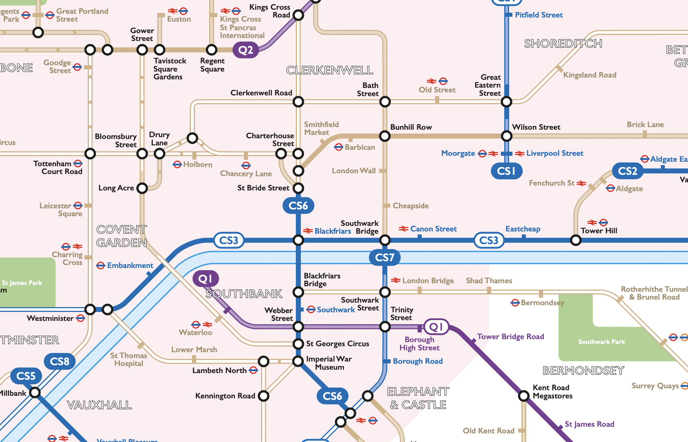

⇦
⇦
This page is split into the following sections:
If you're not in a mad hurry, there are many bits of cycle infrastructure in London that are far more pleasant and safe than the obvious roads. Let's use the example of a journey from Liverpool Street to Angel.
Here is Google maps - it will tend to send you direct on busy roads:

source
In comparison, cycle.travel sends you on nice cycle infrastructure, it will take a bit more brain power to navigate, but definitely worth it for a regular journey:

source
cycle.travel has a pretty rubbish UI, but you can treat this as an opportunity to learn the nice cycle lanes 🙂.
To give a flavour of the extent of London's bike paths, here's a section of a (now outdated) cyclist's tube map:

source
Once you're off the main roads (see above), cycling in London is pretty safe, in fact it feels a lot safer than in most other UK cities. To reduce the likelihood of being involved in a crash, here are some tips on staying safe, take time to ingest them properly.
I've heard great things about Swapfiets . You pay monthly and it comes to about £200 a year. The bikes have lights, locks and mudguards built in. If it breaks, they come fix it. If it gets stolen, you pay a small fee for a new one. Simple!
After a year or so, you might realise you want to buy your own bike that's quicker/will carry more stuff/will handle longer trips , you can cross that bridge when you get there.
My experience with Boris bikes (Kencycles?)/dockless schemes is that the bikes are cumbersome and the parking faffy. Just get the Swapfiets.
Personal advice would be:
My friend Cal did a nice writeup on bicycle security if you want a longer read.
Don't be that city-boy MAMIL boshing up Bishopsgate shouting at pedestrians. Take your time, give big thumbs up to nice drivers, give priority to pedestrians, whistle as you ride.